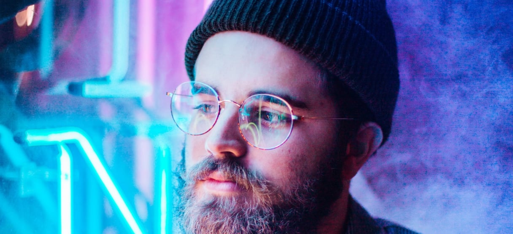

John Doe

About Me
As a passionate and experienced UI designer, I am dedicated to creating intuitive and engaging user experiences that meet the needs of my clients and their users. I have a strong understanding of design principles and a proficiency in design tools, and I am comfortable working with cross-functional teams to bring projects to fruition. I am confident in my ability to create designs that are both visually appealing and functional, and I am always looking for new challenges and opportunities to grow as a designer.
Skills:
- Extensive experience in UI design, with a strong portfolio of completed projects
- Proficiency in design tools such as Adobe Creative Suite and Sketch
- Excellent visual design skills, with a strong understanding of layout, color theory, and typography
- Ability to create wireframes and prototypes to communicate design concepts
- Strong communication and collaboration skills, with the ability to work effectively with cross-functional teams
- Experience conducting user research and gathering insights to inform design decisions
- Proficiency in HTML, CSS, and JavaScript
Experience:
- 5 years of experience as a UI designer, working on a variety of projects for clients in the tech and retail industries
- Led the design of a successful e-commerce website, resulting in a 25% increase in online sales
- Created wireframes and prototypes for a mobile banking app, leading to a 20% increase in app usage
- Conducted user research and usability testing to inform the redesign of a healthcare provider's website, resulting in a 15% increase in website traffic
Education:
- Bachelor's degree in Graphic Design
- Certified User Experience Designer (CUED)